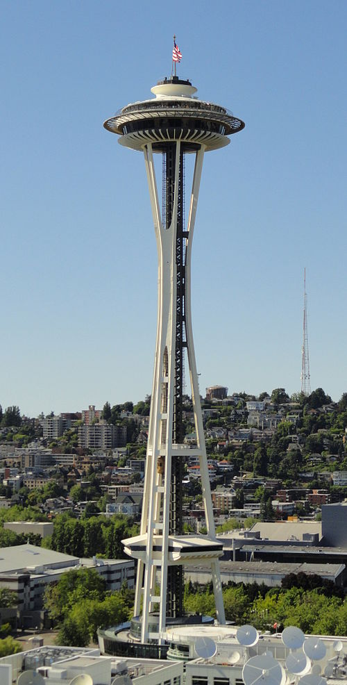

This is a 6x6 table, it displays column headers in bold and row headers in italic. the first column in the table will have a red text, the third column will have blue text. The odd rows will have light green background color and the even rows will have a light blue background color.
| First | Second | Third | Fourth | Fifth | |
|---|---|---|---|---|---|
| First | 1 | 2 | 3 | 4 | 5 |
| Second | 6 | 7 | 8 | 9 | 10 |
| Third | 11 | 12 | 13 | 14 | 15 |
| Fourth | 16 | 17 | 18 | 19 | 20 |
| Fifth | 21 | 22 | 23 | 24 | 25 |
| 2 columns span | 4 columns span | ||||
Here is some content.
The Space Needle is an observation tower in Seattle, Washington, a landmark of the Pacific Northwest, and a symbol of Seattle. It was built in the Seattle Center for the 1962 World's Fair, which drew over 2.3 million visitors, when nearly 20,000 people a day used its elevators. Once the tallest structure west of the Mississippi River,[7] it is 605 ft (184 m) high, 138 ft (42 m) wide, and weighs 9,550 tons. It is built to withstand winds of up to 200 miles per hour (89 m/s) and earthquakes of up to 9.1 magnitude,[8] as strong as the 1700 Cascadia earthquake. It also has 25 lightning rods. It has an observation deck at 520 ft (160 m) and a gift shop with the rotating SkyCity restaurant at 500 ft (150 m).[7] The downtown Seattle skyline, as well as the Olympic and Cascade Mountains, Mount Rainier, Mount Baker, Elliott Bay and surrounding islands can be viewed from the top of the Needle. Photographs of the Seattle skyline often show the Space Needle prominently, above skyscrapers and Mount Rainier.
Visitors can reach the top of the Space Needle by elevators that travel at 10 miles per hour (4.5 m/s). The trip takes 41 seconds. On windy days, the elevators slow to 5 miles per hour (2.2 m/s). On April 19, 1999, the city's Landmarks Preservation Board designated it a historic landmark.